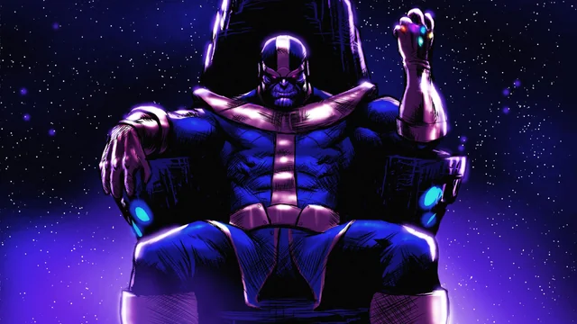
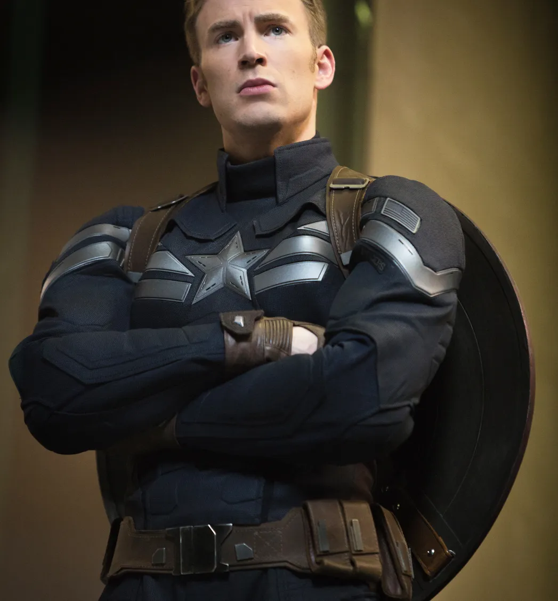
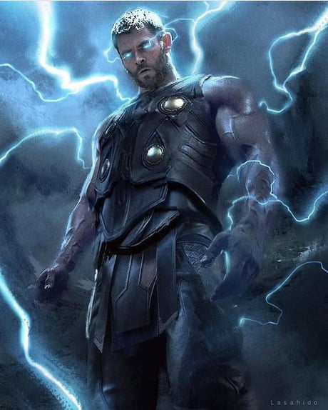
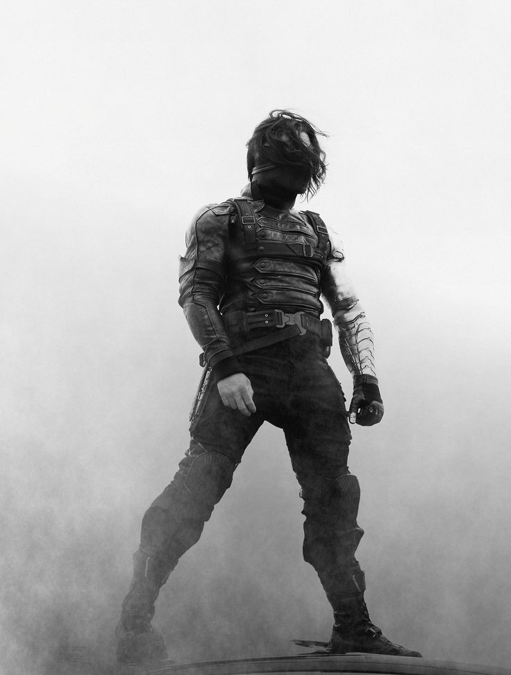

Top 5 Marvel Characters with the Most Aura
Introduction
Some Marvel characters have an aura that commands respect, fear, or admiration.
1. Thanos

- Feared across the entire Marvel Universe.
- His calm, philosophical nature makes him even more intimidating.
- Even without the Infinity Gauntlet, his presence alone demands respect.
Video Example:
2. Iron Man (Tony Stark)

- His legacy of innovation and sacrifice makes him one of the most respected figures in Marvel.
- His aura is one of confidence, leadership, and unmatched style.
Video Example:
3. Captain America (Steve Rogers)

- The ultimate leader and symbol of hope.
- His aura commands respect, loyalty, and admiration from both friends and foes.
Video Example:
4. Thor

- A literal god, yet he fights alongside mortals.
- His aura is one of divine power, charm, and an epic warrior spirit.
Video Example:
5. Bucky Barnes (The Winter Soldier)

- A silent warrior with a haunted past.
- His transformation from villain to hero adds depth to his presence.
Video Example: